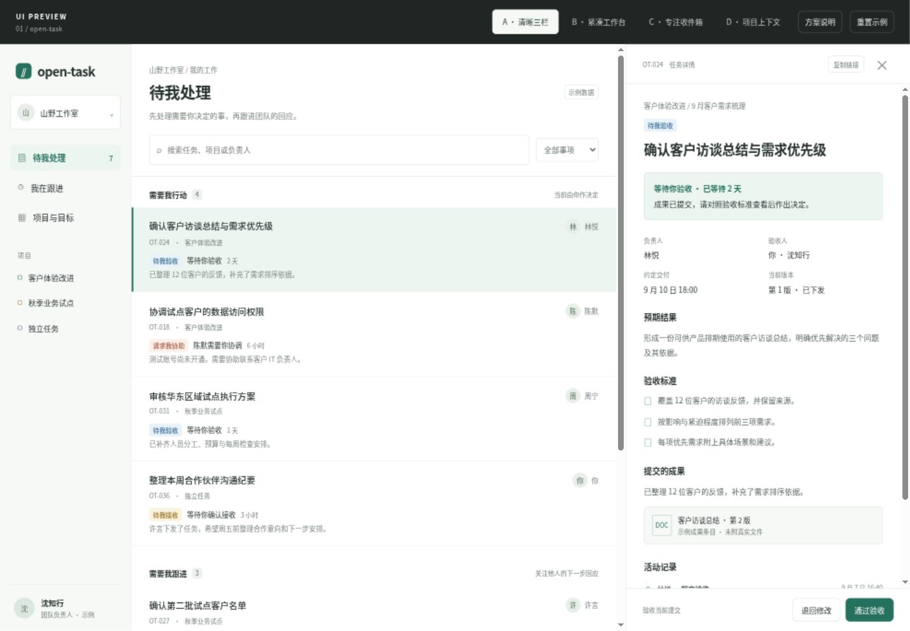
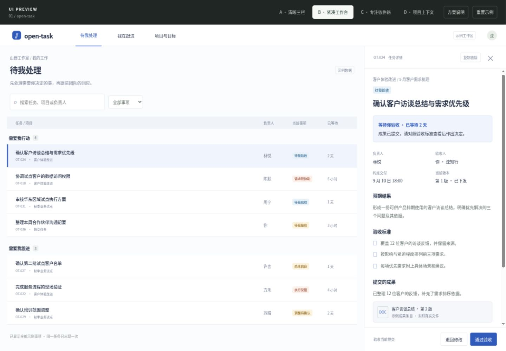
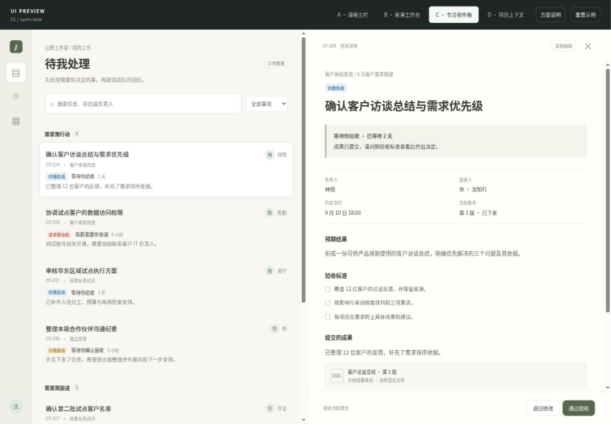
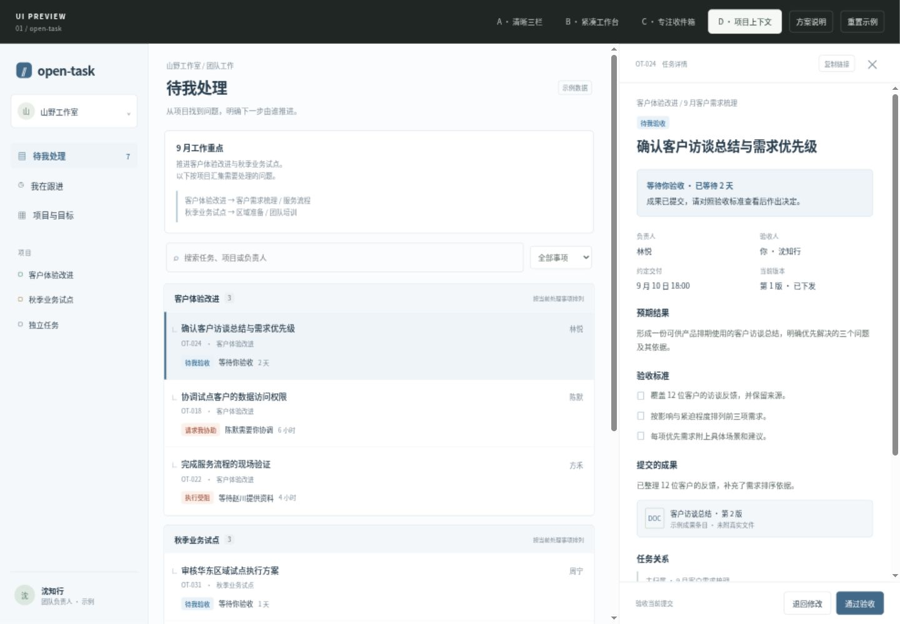

A清晰三栏进入预览 →
均衡、规整，适合跨项目连续处理。重点评审任务行的信息量。

B紧凑工作台进入预览 →
列对齐、密度更高，适合快速扫描。最近进展需要打开详情查看。

C专注收件箱进入预览 →
更安静的阅读节奏，适合审阅成果。一次显示的任务相对较少。

D项目上下文进入预览 →
工作归属更明确，便于理解影响。跨项目按责任扫描会多一层阅读。
同一组示例任务，四种工作方式。点击画面进入预览，体验搜索、详情与验收。所有操作仅作用于示例数据。

均衡、规整，适合跨项目连续处理。重点评审任务行的信息量。

列对齐、密度更高，适合快速扫描。最近进展需要打开详情查看。

更安静的阅读节奏，适合审阅成果。一次显示的任务相对较少。

工作归属更明确，便于理解影响。跨项目按责任扫描会多一层阅读。